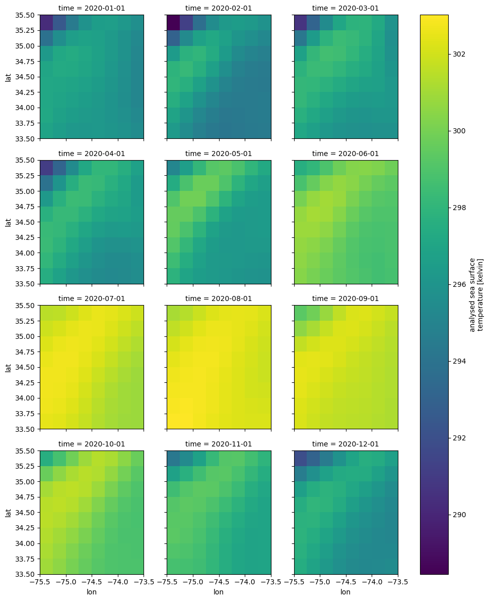
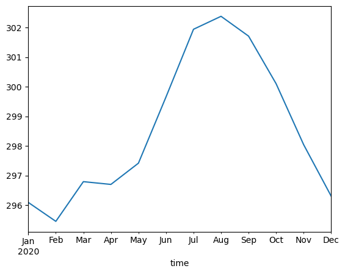
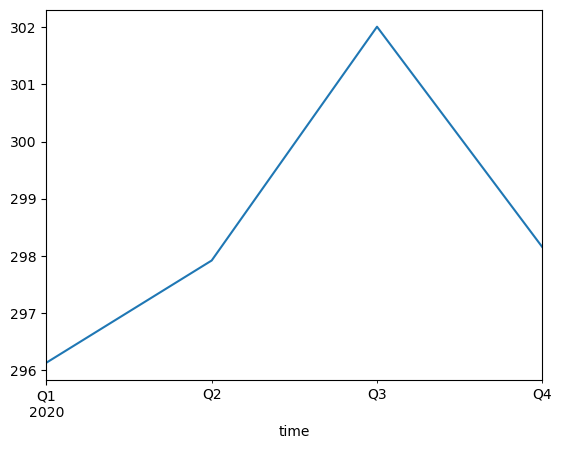
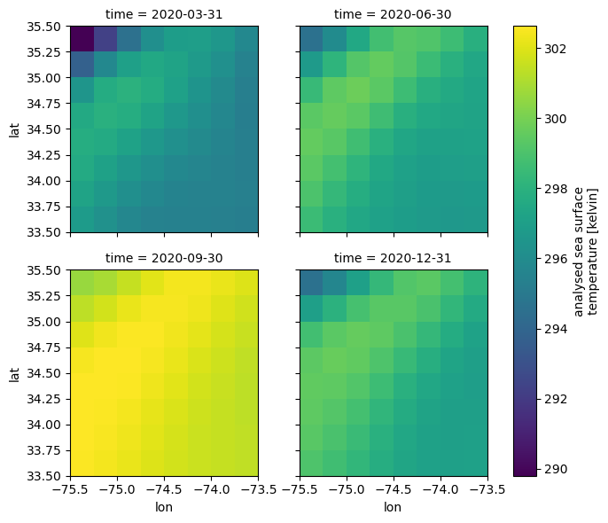

# Suppress warnings
import warnings
warnings.simplefilter('ignore')
warnings.filterwarnings('ignore')
from pprint import pprint
import earthaccess
import xarray as xrWorking with xarray data cubes
📘 Learning Objectives
- Intro to some
xarraytools for data cubes- Point you to resources on line
Summary
Once we have an xarray DataArray, there are many things we can do with it like aggregation, sampling, means and interpolation. See this tutorial for examples. See the xarray gallery in the documentation.
We will use the GHRSST Level 4 AVHRR_OI Global Blended Sea Surface Temperature Analysis data from NCEI. It is lower resolution than the MUR data and will load faster. Also keep in mind that we are on a JupyterHub on Azure while the NASA data is on AWS us-west-2. This means we have to do data access via https and not direct access via S3 and our data access is much slower.
For those not working in the JupyterHub
 and then create a code cell and run
and then create a code cell and run pip install earthaccess.
Import Required Packages
Create our data cube
- Authenticate
auth = earthaccess.login()
# are we authenticated?
if not auth.authenticated:
# ask for credentials and persist them in a .netrc file
auth.login(strategy="interactive", persist=True)- Get a vector of urls to our nc files
short_name = 'AVHRR_OI-NCEI-L4-GLOB-v2.1'
version = "2.1"
date_range = ("2020-01-02", "2020-12-31")
results = earthaccess.search_data(
short_name = short_name,
version = version,
temporal = date_range,
)Granules found: 366We can look at the data links and see that we will be using https.
results[0].data_links()['https://archive.podaac.earthdata.nasa.gov/podaac-ops-cumulus-protected/AVHRR_OI-NCEI-L4-GLOB-v2.1/20191231120000-NCEI-L4_GHRSST-SSTblend-AVHRR_OI-GLOB-v02.0-fv02.1.nc']- Create our data cube and save
This would be instant if our hub were on AWS us-west-2 with the NASA data, but will take a minute or two since we have to use https.
This will take a few minutes
Change from Raw to Code to run
fileset = earthaccess.open(results) ds = xr.open_mfdataset(fileset) dc = ds[‘analysed_sst’].sel(lat=slice(33.5, 35.5), lon=slice(-75.5, -73.5)) dc.to_netcdf(“littlecube.nc”)
- Load our data cube
dc = xr.open_dataset("littlecube.nc")['analysed_sst']Means
Overall mean, all the data.
dc.mean()<xarray.DataArray 'analysed_sst' ()> Size: 4B array(298.5631, dtype=float32)
Daily means over all space.
dc.mean(dim=['lat', 'lon'])<xarray.DataArray 'analysed_sst' (time: 366)> Size: 1kB
array([296.73938, 296.89343, 296.92328, 296.5633 , 296.70032, 296.6867 ,
296.5006 , 296.46686, 296.1819 , 296.1514 , 296.5408 , 296.08966,
295.66736, 296.16452, 295.9995 , 295.877 , 295.8689 , 295.81546,
295.4739 , 295.47705, 295.5378 , 295.7533 , 296.26517, 296.2378 ,
296.21436, 296.1822 , 295.98047, 295.8164 , 295.77423, 295.4317 ,
295.04297, 294.88858, 295.22015, 295.47452, 295.70532, 295.77185,
295.7725 , 295.91983, 295.9339 , 295.44202, 295.20624, 295.39514,
295.65704, 295.5511 , 295.38702, 295.16672, 295.48843, 295.60126,
295.6162 , 295.88547, 295.90265, 295.3266 , 294.7489 , 294.76062,
295.0053 , 295.41937, 295.71063, 295.4889 , 295.3653 , 295.50092,
295.05002, 295.18872, 296.33875, 296.76828, 296.80655, 296.55017,
297.15778, 296.6717 , 296.58655, 296.70078, 297.09686, 297.0692 ,
297.34595, 297.4648 , 297.54623, 297.45624, 297.36905, 297.41486,
297.29703, 296.94843, 297.00296, 297.10297, 297.04312, 296.8697 ,
296.79578, 296.73407, 296.51404, 296.18063, 296.0562 , 296.51172,
297.10498, 296.7483 , 296.03015, 295.92047, 295.88983, 296.16718,
296.38904, 296.59125, 296.5714 , 296.40424, 296.64355, 296.26392,
296.03467, 295.97986, 295.99875, 296.44983, 296.52673, 296.5022 ,
296.50577, 296.57452, 296.70624, 296.77856, 296.8775 , 296.67688,
296.6355 , 297.33484, 297.4214 , 298.06763, 298.31906, 298.20358,
...
302.57956, 302.55872, 302.62 , 302.58328, 302.49185, 302.51434,
302.33905, 302.04706, 301.8042 , 301.58594, 301.35706, 301.13138,
300.88452, 300.43124, 300.33765, 300.18933, 300.16235, 300.14844,
300.14154, 300.1325 , 300.32718, 300.47137, 300.50735, 300.43372,
300.39575, 300.45062, 300.4033 , 300.4425 , 300.3039 , 300.35266,
300.3156 , 300.26 , 300.0495 , 300.2542 , 300.35547, 300.2417 ,
299.96796, 299.90717, 299.70624, 299.72375, 299.85138, 299.90015,
299.88782, 300.08936, 300.11 , 300.11578, 300.1589 , 299.89825,
299.90952, 299.89752, 299.88358, 299.8698 , 299.54364, 299.56876,
299.3811 , 299.2125 , 298.97998, 298.70248, 298.53064, 298.51123,
298.48468, 298.60687, 298.55936, 298.48657, 298.63562, 298.5814 ,
298.34875, 298.12827, 298.09656, 298.14514, 298.11514, 297.3639 ,
297.1286 , 297.10577, 297.1211 , 297.15747, 296.96002, 297.01843,
297.25876, 297.4072 , 297.40875, 297.13153, 297.27155, 297.52905,
297.53876, 296.89252, 296.70795, 296.85562, 296.985 , 297.0583 ,
296.807 , 296.40845, 296.39642, 296.32092, 296.14795, 296.52753,
296.67593, 296.8983 , 296.97797, 297.04175, 296.1742 , 296.05078,
295.62952, 295.8086 , 295.93842, 295.68674, 295.57547, 295.6925 ,
295.84045, 295.65625, 295.6156 , 295.69235, 295.31842, 295.1786 ],
dtype=float32)
Coordinates:
* time (time) datetime64[ns] 3kB 2020-01-01 2020-01-02 ... 2020-12-31Mean over all days.
dc.mean(dim=['time'])<xarray.DataArray 'analysed_sst' (lat: 8, lon: 8)> Size: 256B
array([[299.256 , 298.8255 , 298.42233, 298.09183, 297.85486, 297.70514,
297.63184, 297.61264],
[299.5517 , 299.1316 , 298.674 , 298.26437, 297.9496 , 297.75726,
297.66498, 297.637 ],
[299.7663 , 299.4421 , 298.9925 , 298.51376, 298.12073, 297.86743,
297.73553, 297.6641 ],
[299.84933, 299.74045, 299.3821 , 298.88126, 298.40146, 298.06958,
297.85547, 297.69308],
[299.68115, 299.94406, 299.80054, 299.34943, 298.8011 , 298.34732,
298.01627, 297.73294],
[298.922 , 299.69925, 299.97003, 299.76263, 299.2471 , 298.70444,
298.24847, 297.82803],
[297.21112, 298.42197, 299.31717, 299.7068 , 299.55844, 299.1261 ,
298.60266, 298.04752],
[294.91473, 296.2261 , 297.65552, 298.82178, 299.41824, 299.44717,
299.0521 , 298.4514 ]], dtype=float32)
Coordinates:
* lat (lat) float32 32B 33.62 33.88 34.12 34.38 34.62 34.88 35.12 35.38
* lon (lon) float32 32B -75.38 -75.12 -74.88 ... -74.12 -73.88 -73.62Grouped Means
Monthly, seasonal means, or custom. xarray is designed help you do typical climate calculations. See this tutorial for examples. See the xarray gallery in the documentation. This tutorial shows means with weighting.
Monthly
dc_monthly = dc.resample(time='1MS').mean()
dc_monthly<xarray.DataArray 'analysed_sst' (time: 12, lat: 8, lon: 8)> Size: 3kB
array([[[296.91614, 296.48288, 296.22324, 296.16 , 296.1964 ,
296.07355, 295.80743, 295.4726 ],
[297.16415, 296.80356, 296.51352, 296.33163, 296.19284,
295.9984 , 295.68124, 295.29578],
[297.13965, 296.9329 , 296.7019 , 296.48032, 296.27747,
296.009 , 295.5878 , 295.16193],
[297.1003 , 297.0984 , 296.96936, 296.7497 , 296.46744,
296.12775, 295.62772, 295.13358],
[297.02063, 297.2971 , 297.25 , 297.0139 , 296.66196,
296.22934, 295.68643, 295.11255],
[296.29773, 297.15997, 297.34677, 297.15097, 296.7677 ,
296.30838, 295.80228, 295.21225],
[293.87357, 295.57614, 296.5371 , 296.86255, 296.6787 ,
296.3432 , 295.90228, 295.32126],
[290.24963, 292.47968, 294.46033, 295.85062, 296.49615,
296.558 , 296.20642, 295.63773]],
[[296.3342 , 295.4772 , 294.74622, 294.31934, 294.16925,
294.2638 , 294.38898, 294.4645 ],
[296.92587, 296.05792, 295.19794, 294.60657, 294.3103 ,
...
298.79996, 298.06934, 297.46368],
[294.25702, 295.36368, 296.789 , 298.232 , 299.11603,
299.1737 , 298.5793 , 297.94467]],
[[297.47675, 296.9103 , 296.28128, 295.71838, 295.37872,
295.26645, 295.30548, 295.4164 ],
[297.6929 , 297.20355, 296.57605, 295.95093, 295.51385,
295.3145 , 295.24738, 295.26065],
[297.78705, 297.49353, 296.95062, 296.30414, 295.76477,
295.4597 , 295.2748 , 295.1558 ],
[297.7706 , 297.7881 , 297.4032 , 296.78485, 296.12967,
295.7232 , 295.40552, 295.14032],
[297.528 , 297.9558 , 297.8684 , 297.33127, 296.60452,
296.08032, 295.6409 , 295.22516],
[296.62164, 297.469 , 297.82608, 297.66513, 297.12384,
296.641 , 296.08096, 295.49902],
[294.56384, 295.72772, 296.73026, 297.32483, 297.4303 ,
297.33844, 296.7729 , 296.05386],
[291.86996, 293.0355 , 294.47284, 295.90158, 296.97806,
297.611 , 297.36743, 296.6858 ]]], dtype=float32)
Coordinates:
* lat (lat) float32 32B 33.62 33.88 34.12 34.38 34.62 34.88 35.12 35.38
* lon (lon) float32 32B -75.38 -75.12 -74.88 ... -74.12 -73.88 -73.62
* time (time) datetime64[ns] 96B 2020-01-01 2020-02-01 ... 2020-12-01
Attributes:
long_name: analysed sea surface temperature
standard_name: sea_surface_temperature
units: kelvin
valid_min: -300
valid_max: 4500
source: UNKNOWN,ICOADS SHIPS,ICOADS BUOYS,ICOADS argos,MMAB_50KM-...
comment: Single-sensor Pathfinder 5.0/5.1 AVHRR SSTs used until 20...dc_monthly.plot(x='lon', y='lat', col="time", col_wrap=3);
dc_monthly.mean(dim=['lat', 'lon']).to_pandas().plot();
Seasonal (quarterly)
dc_qtr = dc.resample(time='Q').mean()
dc_qtr.mean(dim=['lat', 'lon']).to_pandas().plot()
dc_qtr.plot(x='lon', y='lat', col="time", col_wrap=2);
Summary
We learned how to do some simple spatial and temporal means with xarray data cubes.